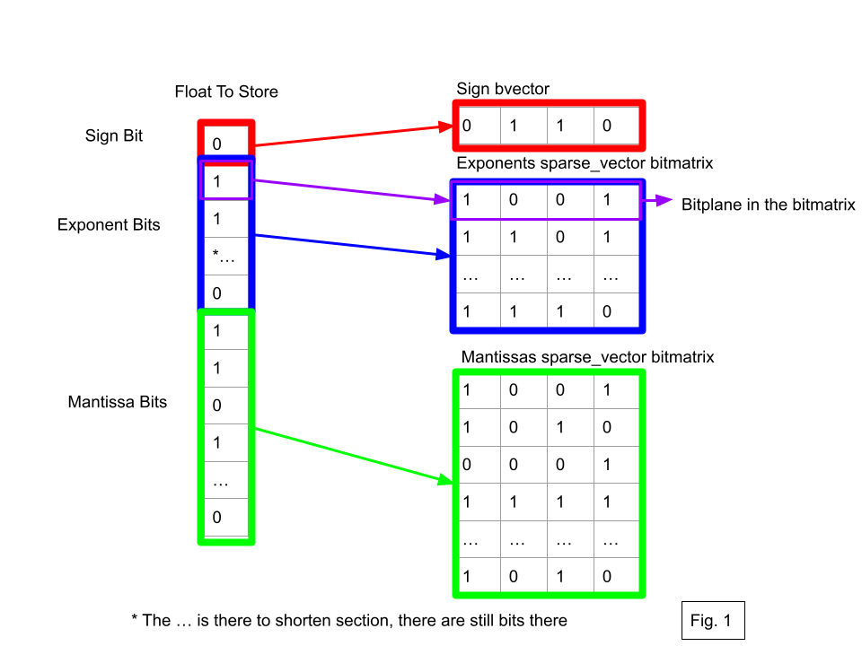
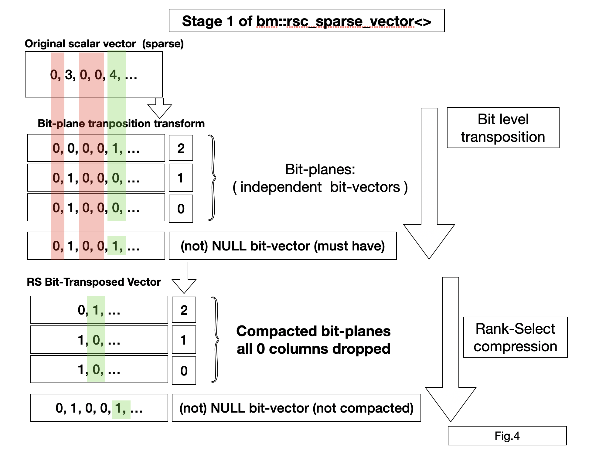
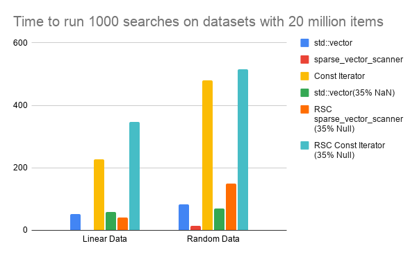

Using Sparse Vector Floats on Financial Datasets
Anatoliy Kuznetsov. July 2026 (based on BM v.9.2.1+)Introduction
Modern financial datasets store huge amounts of data,
requiring data structures that have low memory footprints, as well as fast searching
and minimal serialization overhead. Standard containers such as the std::vector<float>
can require significant amounts of memory when storing millions of float values over large timelines.
The bm::sparse_vector_float class addresses this issue by breaking down floats into their sign, exponent,
and mantissa, and storing them in separate succinct vectors, allowing for increased data compression and faster
searches through bitwise operations.
By storing financial data in sparse_vector_floats, since the floats are split into the the sign,
exponent, and mantissa, the compression of the dataset is increased, as often financial data such as
exchange rates have many consecutive values with the same exponents, allowing for increased data compression.
It also allows for faster searching of the dataset through the bm::sparse_vector_scanner class by evaluating
conditions separately on the different components of the float using bit operations.
xsample11 shows a practical application of storing exchange rates in
bm::sparse_vector_floats. The example imports the exchange rates between
EUR/USD and USD/JPY, and optimizes and freezes the dataset as no changes would
occur such as adding or removing values. The exchange rate information stored
specifically in bm::sparse_vector_floats is the low, high, open, and close of the
exchange rate for nearly every hour for 16 years. These vectors each hold approximately
100,000 values, and each take up approximately 373,000 bytes in memory. Comparing this to an
std::vector<float>, which takes 399,852 bytes to store the data of one of these vectors,
a bm::sparse_vector_float has an approximately 7% decrease in size.
Instead of keeping these vectors loaded throughout the duration of the program,
it is possible to serialize the vectors and store them that way, unserializing them when needed,
which decreases their size to 230,000 bytes, which is not possible with std::vectors so the size
decrease is approximately 42.5%.
Description of the Method

Floats are structured with IEEE 754, which splits floats into 3 parts, the sign,
the first bit which determines if the float is positive or negative, the exponent,
the next 8 bits determines the magnitude of the float, and the mantissa, remaining
23 bits of the float that indicate specific values in the float. A bm::sparse_vector_float
data structure stores floats by splitting the floats into their respective signs, stored as
bvectors, exponents, and mantissas, stored as some type of sparse_vector, determined on
creation by a user. Stored this way, this is equivalent to storing floats in a std::vector<float> as
although it splits up the float, it is not lossy compression or an approximation of the original float,
so it contains the same 32 bits, just stored separately.
Once the float is separated into its 3 parts, in each sparse_vector the exponents and mantissas are split into their individual bits, each bit being stored on a different bitplane of a bitmatrix. Fig. 1 has a visual of how a float is split up.
Part of the compression in the bm::sparse_vector_float comes from the compressive qualities
of a bm::sparse_vector, as a bm::sparse_vector_float is essentially a wrapper for the class,
so the compression techniques like bit-blocks and GAP-blocks come from storing the data internally
as sparse and bit vectors. More details on sparse_vector compression techniques can be found at the
Design page.
The other part of the compression comes back to how floats are structured.
If you have a dense dataset with the value of the floats close together, they will share many
similarities, particularly the sign and exponent of the float. For example, if you have a dataset
with values between 128 and 255, then every single value will have the same sign and exponent.
This means that entire bitplanes can be only a single value, 1 or 0. This allows for a lot of
compression as you can have an entire plane represented in 8 bytes with the topmost pointer
pointing to nothing if a plane is all 0’s. On the other hand, mantissas are close to uniformly random,
with 2 floats that are close together in value can have very different mantissas, meaning the mantissa does
not compress as well. Despite this it can still partially compress as they may still have some
similarities to surrounding values, like the first few bits being similar.

When storing the data with NULLs and/or using an RSC sparse_vector, then entire columns can be dropped from the vector, which further improves compression as the sparse vector can just store the existing values, so if there are 10 million values with 35% being nulls, then it only needs to store 6.5 million values, as opposed to a sparse_vector which would store all 10 million values. See Fig. 4 for a visual of how it works, or go to the Design page for more details.
A sparse_vector_float is a new succinct data structure due to the way it stores data, instead of just being an array of floats, at its base it is 3 seperate arrays of parts of floats, which exploits magnitude clustering of data in order to increase compression. While doing this, It supports random access and efficient searching of its data while remaining compressed.
Search in a sparse_vector_float
Because floats are decomposed into separate fields, the bm::sparse_vector_scanner class
can search the internal sparse vectors directly to locate values matching a given range. Determining
whether a float falls within a target range comes down to comparing its exponent and mantissa fields
independently: searching the exponent's sparse vector first narrows the candidates to every float within
the correct order of magnitude. From there, searching the mantissa refines that set further, isolating
floats that fall inside the target range in magnitude but landed outside it once their precise value
is considered. The results from both searches are then combined through a series of bitwise operations,
producing a mask that marks exactly the floats within the requested range.
Example:
Vector: 50, 100,120, 200, -120
Goal: Find every float larger than 110
Step 1: Check the exponent of each vector, and find that all but 50 have the same or greater exponent as 110.
x represents having a bit turned off in the bitvector
Main vector: x, 100,120, 200, -120
Step 2: Find every float with the same exponent as 110
Exponent vector: x, 100,120, x, -120
Step 3: Check the mantissas to find every float with a mantissa less than 110's mantissa, that is also in the Exponent vector
Mantissa vector: x, 100, x, x, x
Final Step: From this, by using several bitwise operations to subtract elements not fitting the
range specified from the main vector. through earlier steps, as well as checking the signs bvector
Final vector: x, x, 120, 200, x
Step by step searches are not possible in std::vector<float>, it is only possible to do
comparisons with single values, like checking if 50 is > then 110, then 100, then 120, etc.
The closest comparison with how an std::vector can do this is going through an unordered
dataset linearly, passing through each element once, doing a total of N comparisons.
Comparing this to an bm::sparse_vector_float, using a scanner can be significantly faster
depending on the dataset. As seen above, the scanner would have to do 3 internal scans, and
then several more bitwise operations(and, or, and sub). There are multiple reasons why searching
this way can be faster than how an std::vector is searched. First, to understand how a scanner
finds all values greater than a certain value, X. To do this, the scanner does 2 steps,
the first step aggregating all bitplanes higher than X’s largest bit, which are definitely
larger than X. The next step it does is checking all the other bitplanes to make sure that
the value is greater than X, on a plane by plane basis instead of on a bit by bit basis
like a std::vector. So why is doing this faster? The first reason is compression, in a
well compressed sparse vector, it is possible to essentially skip bits, as they are all
similar to the nearby bits, enabling less operations needing to read the bits, allowing
bulk reading. The second reason is how the scanner does these searches, it uses bitwise
operations, bit_or and bit_or_and in order to find the bits that fit some parameter(>, <), which
due to internal optimizations allow for the bit skipping as well as combining multiple
operations together into one.
Experimental Environment
Tests were run on an Apple Macbook pro M2, with a performance comparison to a Linux AMD PC with SIMD (SSE4.2, AVX2) Compilation settings on Mac:
g++ -Wall -Wc++11-extensions -c -D_REENTRANT -D__Darwin_25_5_0 -D_GNU_SOURCE -std=c++17 -Wall -Wextra -Werror=uninitialized -Wshadow -Wconversion -Wmissing-declarations -Wswitch-default -Wimplicit-fallthrough
Compilation settings on Linux:
SSE 4.2:
g++ -march=core2 -msse4.2 -c -DBMSSE42OPT -D_REENTRANT -D__Linux_6_18_33_2 -D_GNU_SOURCE -std=c++17 -Wall -g0 -O2 -ggdb -fomit-frame-pointer -pipeAVX2:
g++ -march=skylake -mavx2 -c -DBMAVX2OPT -D_REENTRANT -D__Linux_6_18_33_2 -D_GNU_SOURCE -std=c++17 -Wall -g0 -O2 -ggdb -fomit-frame-pointer -pipePerformance and benchmarking
Performance on historical transfer rates used in xsample11:
Number of Elements: Approx. 100,000
Memory Usage in bytes:
| Data Structure Type | Vector Name | Memory Used (B) | Serialized Size (B) |
|---|---|---|---|
| std::vector<float> | 399852 | ||
| std::vector<unsigned int> | 399852 | ||
| std::vector<std::string> (excl. overhead) | 1899297 | ||
| str_sparse_vector | eur_day (dates) | 284346 | 82507 |
| str_sparse_vector | jpy_day (dates remapped) | 240020 | 87530 |
| sparse_vector_float | eur_open | 375760 | 229186 |
| sparse_vector_float | eur_high | 375236 | 228422 |
| sparse_vector_float | eur_low | 375760 | 229186 |
| sparse_vector | eur_pct_change | 191864 | 114358 |
| sparse_vector_float | eur_close | 375236 | 228422 |
| sparse_vector | eur_volume | 299004 | 194225 |
| sparse_vector_float | jpy_open | 370448 | 233827 |
| sparse_vector_float | jpy_high | 369380 | 232607 |
| sparse_vector_float | jpy_low | 370448 | 233827 |
| sparse_vector | jpy_pct_change | 194416 | 115510 |
| sparse_vector_float | jpy_close | 369380 | 232607 |
| sparse_vector | jpy_volume | 297216 | 190493 |
Time for a scanner to find every value in a certain range in this dataset: Approximately .1 ms
Data sets for xsample11 were gotten from Dukascopy using Blue Capital Trading Data
Performance on custom datasets:
Time in seconds to run 1000 range searches with different data structures and methods on 20 million items:
Vectors are gone through linearly
| Data Structure | Linear Data | Random Data | Linear Data Linux SSE4.2 | Random Data Linux SSE4.2 | Linear Data Linux AVX2 | Random Data Linux AVX2 |
|---|---|---|---|---|---|---|
| std::vector | 52 | 83.34 | 66 | 120 | 66 | 120 |
| sparse_vector_scanner | 0.64 | 14.66 | 0.95 | 17 | 0.74 | 28 |
| Const Iterator | 228 | 480 | 345 | 624 | 336 | 618 |
| std::vector (35% NaN) | 58.46 | 69.18 | 96 | 120 | 96 | 120 |
| RSC sparse_vector_scanner (35% Null) | 41.59 | 150 | 45 | 180 | 41 | 162 |
| RSC Const Iterator (35% Null) | 348 | 516 | 498 | 669.6 | 564 | 738 |
Graph of Mac Runtimes:

Memory size in Bytes of a sparse_vector_float with different data types and sizes:
| Data Structure | 100000 Elements | 1000000 Elements | 10000000 Elements |
|---|---|---|---|
| std::vector<float> | 400024 | 4000024 | 40000024 |
| SVF Linear | 338176 | 1819648 | 12703488 |
| SVF Random | 539232 | 3870464 | 36430080 |
| RSC SVF Linear | 266256 | 1558288 | 11536280 |
| RSC SVF Random | 351344 | 2765584 | 26786576 |
 |
 |
 |
Serialized size of sparse_vector_float with different data types and sizes:
| Data Structure | 100,000 Elements | 1,000,000 Elements | 10,000,000 Elements |
|---|---|---|---|
| std::vector<float> | 400024 | 4000024 | 40000024 |
| SVF Linear | 191310 | 956513 | 6890859 |
| SVF Random | 375352 | 3470964 | 34693378 |
| RSC SVF Linear | 149633 | 1166626 | 9122900 |
| RSC SVF Random | 254964 | 2546823 | 25480286 |
 |
 |
 |
GitHub
Sources are available:
Dukascopy using Blue Capital Trading
xsample11